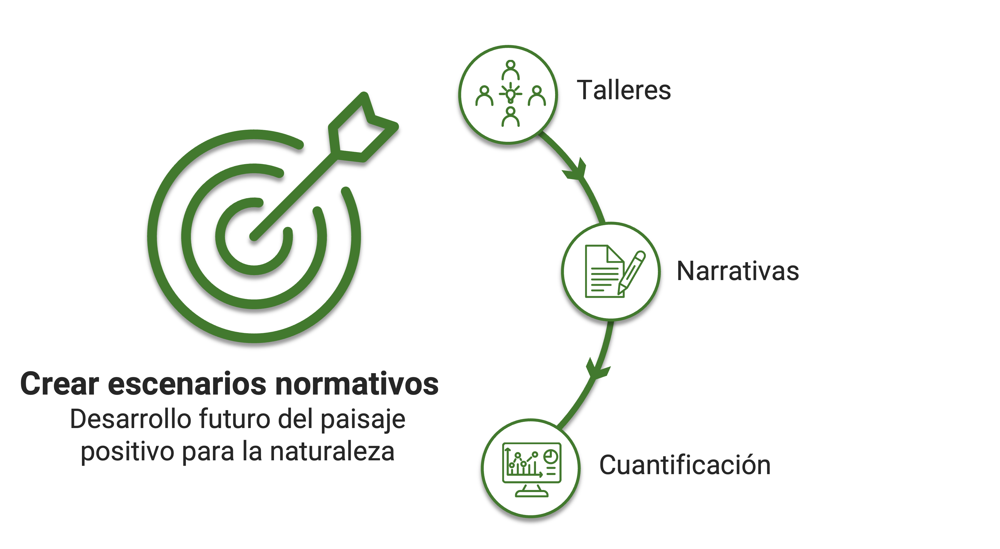
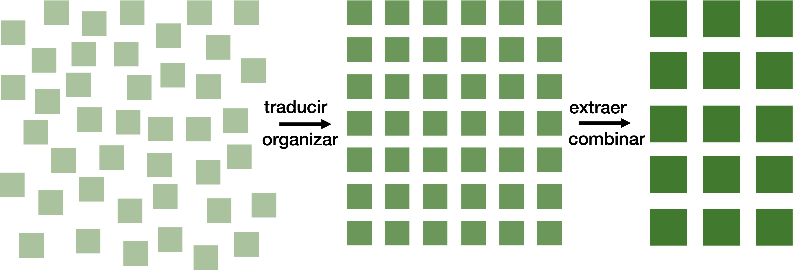

Comprender cómo podrían cambiar los paisajes de Perú en el futuro requiere más que ejecutar modelos computacionales. Implica un proceso que reúna a personas con diferentes experiencias, valores y áreas de especialización. En NASCENT-Peru, combinamos la participación de las partes interesadas, la evidencia científica y la modelización de escenarios para explorar futuros positivos para la naturaleza y sus posibles implicaciones. El scrollytelling que sigue presenta este proceso paso a paso, desde las primeras ideas compartidas en los talleres hasta los escenarios finales utilizados en nuestras simulaciones. Desplácese hacia abajo para explorar el proceso.
En nuestro proyecto el flujo de trabajo para crear escenarios normativos y positivos para la naturaleza consta de tres pasos principales:
1. Realizar talleres con las partes interesadas pertinentes para debatir el desarrollo futuro del paisaje en Perú.
2. Redactar narrativas de desarrollo futuro basadas en los resultados de los talleres.
3. Cuantificar el contenido de las narrativas utilizando literatura científica para generar insumos para nuestros modelos computacionales.
Comencemos entonces con los talleres.
En mayo y junio de 2024 realizamos una serie de 5 talleres en diferentes regiones de Perú. Comenzamos con un taller nacional en Lima, seguido de cuatro talleres regionales en Piura, Puerto Maldonado, Huaraz y Tarapoto.
En el taller nacional en Lima, los participantes participaron en una serie de ejercicios que incluyeron tareas individuales, discusiones en grupo y sesiones plenarias para:
1. Identificar los principales impulsores que están moldeando el futuro paisaje de Perú.
2. Agrupar esos impulsores en las categorías Social, Tecnológica, Ecológica, Económica y Política.
3. Clasificar cada impulsor según su impacto previsto en el paisaje.
Los resultados de esta clasificación se muestran en el gráfico de burbujas. La categoría Política encabeza en cuanto al número de impulsores considerados importantes (más alto en el eje vertical). Sus principales impulsores son políticas de ordenamiento territorial (zonificación y tenencia de la tierra), debilidad de las instituciones gubernamentales (capacidad administrativa insuficiente y amplia desconfianza pública), modificaciones de ley forestal (normas de concesión y mecanismos de aplicación) y deficiente articulación institucional (mandatos superpuestos y responsabilidades poco claras). Para las demás categorías, los impulsores individuales más significativos son:
• Social: cambio demográfico (crecimiento poblacional y urbanización)
• Tecnológica: cierre la brecha energética (extensión de la red y suministro confiable)
• Ambiental: proyectos en infraestructura (carreteras y represas)
• Económica: actividades económicas ilegales (minería y tala informal)
Tras el taller nacional, realizamos cuatro talleres regionales y aplicamos el Marco de los Tres Horizontes para guiar las discusiones sobre el paisaje en diferentes estados temporales.
El Marco de los Tres Horizontes divide el cambio de un sistema en tres horizontes basados en el tiempo:
• Horizonte 1: el estado actual y establecido del sistema
• Horizonte 2: los impulsores o acciones emergentes que refuerzan o desafían ese estado
• Horizonte 3: el estado futuro aspiracional y a largo plazo
Adaptamos este marco para nuestros talleres definiendo el Horizonte 1 como el paisaje actual de cada región, el Horizonte 2 como los impulsores nacionales identificados en Lima que podrían apoyar o dificultar cambios en el paisaje, y el Horizonte 3 como el paisaje futuro deseable imaginado por los participantes.
En cada uno de los talleres regionales, los participantes trabajaron en una serie de ejercicios interactivos para:
1. Caracterizar el paisaje actual de su región (Horizonte 1).
2. Definir un paisaje futuro deseable (Horizonte 3).
3. Evaluar los impulsores nacionales, juzgando en cada caso si apoyarían o impedirían la transición desde el paisaje actual hacia el paisaje futuro deseable (Horizonte 2).
En total, los cinco talleres reunieron a 103 participantes de más de 85 organizaciones. Representaban a cinco grupos de partes interesadas:
• Academia
• Funcionarios gubernamentales
• ONG / Organizaciones comunitarias de base
• Sector privado
• Profesionales
En conjunto, las partes interesadas identificaron más de 700 declaraciones que describen paisajes futuros deseables en Perú. En cada taller regional, surgieron ciertas prioridades a partir de las discusiones sobre estos futuros imaginados. En la Selva Andina (Tarapoto), esta prioridad fue la producción agrícola mediante la industrialización y la innovación tecnológica. En el Cuenca del Amazonas (Puerto Maldonado), fue la reducción de mercurio, plásticos y otros contaminantes en ríos y suelos. En los Andes (Huaraz), fue la mejora de la gestión del agua mediante la captación de caudales de la temporada de lluvias para el abastecimiento durante todo el año. En la Costa Peruana (Piura), fue la conectividad de la biodiversidad mediante la ampliación de áreas protegidas y la alineación de la planificación económica con la zonificación ecológica.
Los talleres regionales también revelaron perspectivas divergentes sobre si ciertos impulsores apoyarían o dificultarían el progreso hacia los paisajes futuros deseados. Los impulsores resaltados en negrita en el gráfico son aquellos sobre los que los talleres expresaron opiniones particularmente divergentes en cuanto a su influencia para lograr las visiones regionales.
La fase de talleres concluyó con una amplia recopilación de ideas sobre los paisajes futuros de Perú, destacando las prioridades regionales y las áreas de desacuerdo en los impulsores clave.
Sobre esta base, el siguiente paso fue sintetizar la información de todos los talleres en narrativas coherentes.
Tradujimos todas las declaraciones recopiladas en los talleres al inglés y luego extrajimos aquellas que describían características deseables del paisaje. Estas declaraciones fueron organizadas sistemáticamente y combinadas cuando fue apropiado, dando como resultado un conjunto final de 60 declaraciones únicas.
Para preparar el desarrollo de las narrativas, organizamos las 60 declaraciones únicas en grupos temáticos utilizando el Marco de Futuros de la Naturaleza (NFF, por sus siglas en inglés), desarrollado por la Plataforma Intergubernamental Científico-Normativa sobre Diversidad Biológica y Servicios de los Ecosistemas (IPBES). El NFF representa visiones positivas de las relaciones humano–naturaleza a lo largo de tres ejes de valor:
Naturaleza para la Naturaleza: considerar que la naturaleza tiene un valor intrínseco y merece respeto independientemente del beneficio humano.
Naturaleza para la Sociedad: reconocer el valor instrumental de la naturaleza en la provisión de servicios ecosistémicos que benefician a las personas.
Naturaleza como Cultura: valorar las conexiones relacionales entre las personas y la naturaleza a través de la cultura, la identidad y las prácticas tradicionales.
Luego realizamos un ejercicio interno en el que cada miembro de nuestro grupo de investigación posicionó individualmente las 60 declaraciones dentro del espacio triangular definido por el NFF, utilizando una aplicación web personalizada que desarrollamos para este fin.
Posteriormente, se llevó a cabo un análisis de conglomerados mediante k-means para agrupar las declaraciones de forma objetiva. Al calcular el índice de silueta en 1000 ejecuciones por número de conglomerados (k), encontramos que el número óptimo de conglomerados era tres. Los conglomerados resultantes se alinearon estrechamente con uno de los tres ejes del Marco de Futuros de la Naturaleza.
Después de asignar cada declaración a uno de estos tres conglomerados, evaluamos el nivel de acuerdo entre las ubicaciones individuales. En la imagen, los puntos rojos representan estas respuestas individuales, mientras que el punto negro indica la posición promedio.
algunas declaraciones, hubo un fuerte acuerdo entre las respuestas individuales sobre su ubicación.
En otras hubo más desacuerdo. En estos casos, discutimos cuál de los tres conglomerados correspondía mejor al contenido de cada declaración y alcanzamos un consenso sobre la ubicación final.
Al final, cada declaración se asignó a uno de los tres ejes del Marco de Futuros de la Naturaleza. Las declaraciones que correspondían a más de una perspectiva de valor se situaron entre los ejes en la imagen. Esta agrupación formó la base para el desarrollo de las narrativas de los escenarios.
Resumimos los impulsores similares del taller nacional en impulsores únicos y más amplios cuando fue apropiado. En el siguiente paso, vinculamos cada declaración con los impulsores pertinentes para describir cómo podría desarrollarse el cambio futuro del paisaje en relación con cada impulsor en cada escenario. Además de los tres escenarios normativos, cada uno vinculado a un eje del Marco de Futuros de la Naturaleza, también desarrollamos un escenario exploratorio de Continuidad de Tendencias como contraste. Todas las declaraciones vinculadas fueron enriquecidas con información procedente de una amplia revisión bibliográfica.
Finalmente, desarrollamos las narrativas para cada escenario mediante un proceso iterativo de redacción, incorporando dos rondas de retroalimentación para garantizar la claridad y la coherencia. En cada narrativa, integramos de manera sistemática las declaraciones agrupadas, los impulsores vinculados y la información obtenida de la revisión bibliográfica, fundamentando cada escenario tanto en las perspectivas de las partes interesadas como en la evidencia científica. Como parte de este enriquecimiento, también cuantificamos ciertos aspectos de los escenarios utilizando fuentes bibliográficas, como el número proyectado de habitantes para 2060 o el porcentaje de la población que viviría en áreas urbanas.



